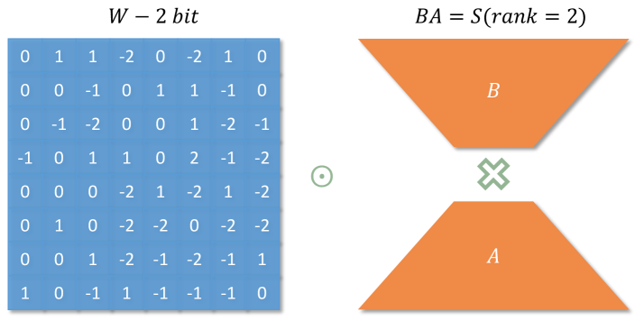

Why it matters왜 중요한가
For years, quantization, quantization-aware training (QAT), and parameter-efficient fine-tuning (PEFT) have been three separate toolboxes with three separate failure modes. LoRDS notices they all hinge on the same object — the scaling factor — and rewrites it once.
수년간 양자화, 양자화 인식 학습(QAT), 파라미터 효율 미세조정(PEFT)은 서로 다른 실패 양식을 가진 세 개의 별도 도구상자였다. LoRDS는 이들이 모두 같은 대상 — 스케일링 인자 — 에 달려 있음을 포착하고, 그것을 한 번에 다시 쓴다.
Block-wise quantization (GPTQ, AWQ, NF4) stores one scale per block of weights. Stack those scales and you get a scaling matrix S that is piecewise-constant — mathematically it is already low-rank, just in the crudest possible way (a staircase). LoRDS's insight is to keep the same parameter count but spend it on a smooth low-rank factorization S = BA instead of a staircase, letting the scale vary per element and hug outliers. Because the scale is what turns integer codes back into weights (Ŵ = Q ⊙ BA), fine-tuning B and A is a multiplicative edit to the weights that never leaves the dequant path — so unlike QLoRA's additive adapter, there is nothing to merge and no extra matmul at inference. And because the edit multiplies a full-rank weight, its effective rank can far exceed the tiny rank r of B and A, breaking the low-rank ceiling that limits ordinary LoRA.
블록 단위 양자화(GPTQ, AWQ, NF4)는 가중치 블록마다 스케일 하나를 저장한다. 이를 쌓으면 조각별 상수인 스케일링 행렬 S가 되는데 — 수학적으로 이미 저랭크지만, 가장 조잡한 방식(계단)이다. LoRDS의 통찰은 같은 파라미터 수를 유지하되 계단 대신 매끄러운 저랭크 분해 S = BA에 쓰는 것이다. 그러면 스케일이 원소별로 변하며 이상치를 감쌀 수 있다. 스케일이 정수 코드를 다시 가중치로 되돌리는 장본인이므로(Ŵ = Q ⊙ BA), B와 A를 미세조정하는 것은 디퀀트 경로를 절대 벗어나지 않는 곱셈형 가중치 편집이다 — 따라서 QLoRA의 덧셈형 어댑터와 달리 병합할 것도, 추론 시 추가 행렬곱도 없다. 또 이 편집이 풀랭크 가중치를 곱하므로, 그 유효 랭크는 B·A의 작은 랭크 r을 훨씬 넘어설 수 있어 일반 LoRA의 저랭크 한계를 깬다.

By the numbers핵심 숫자
Quantized PEFT — same budget, higher accuracy, no inference tax양자화 PEFT — 같은 예산, 더 높은 정확도, 추론 세금 0
| Method (4-bit) | #FP params | Extra infer cost | Commonsense avg (%) |
|---|---|---|---|
| QLoRA | 193M | Yes (additive adapter) | 78.08 |
| LoftQ | 193M | Yes (additive adapter) | 83.49 |
| LoRDS (ours) | 84M | None | 87.68 |
Block-wise vs. LoRDS scaling블록 방식 vs. LoRDS 스케일링
The three ideas세 가지 핵심 아이디어
Continuous low-rank scaling
A block-wise quantizer stores one scale per block; stacked, they form a crude piecewise-constant matrix S. LoRDS keeps the byte budget but reshapes S into a truncated-SVD product B·A with rank r = ⌊nm / B(n+m)⌋ — the exact rank that matches block-wise storage. The scale now varies continuously, from coarse (small r) to near per-element (large r).
블록 양자화기는 블록당 스케일 하나를 저장한다 — 쌓으면 조각별 상수인 거친 행렬 S가 된다. LoRDS는 바이트 예산은 유지하되 S를 잘린 SVD 곱 B·A로 재구성하며, 랭크 r = ⌊nm / B(n+m)⌋ 는 블록 저장량과 정확히 맞춘 값이다. 이제 스케일은 거친(작은 r) 것부터 거의 원소별(큰 r)까지 연속적으로 변한다.
One factorization, three stages
The same B, A power the whole efficiency lifecycle. PTQ: alternate nearest-code quantization Q with an AdamW update of B, A to minimize ‖W − Q⊙BA‖ (under 30 min for 8B). QAT: make round() differentiable with a straight-through estimator and jointly train W, B, A. No stage needs a bespoke method — they share one parameterization.
같은 B, A가 효율화 전 과정을 구동한다. PTQ: 최근접 코드 양자화 Q와 B, A의 AdamW 업데이트를 번갈아 ‖W − Q⊙BA‖ 를 최소화한다(8B에 30분 미만). QAT: round()를 STE로 미분 가능하게 만들어 W, B, A를 함께 학습한다. 어느 단계도 전용 방법이 필요 없다 — 하나의 파라미터화를 공유한다.
Multiplicative, zero-overhead PEFT
For a downstream task, fine-tune only B and A. The edit is ΔW = Q ⊙ (B'A' − BA) — multiplicative, living inside the dequant scale, so at deployment it simply becomes the new scale: no adapter to merge, no extra matmul, base-model latency. And multiplying a full-rank W means the effective rank of ΔW can far exceed r, so a LoRA-sized budget buys near-full-rank adaptation.
다운스트림 태스크에는 B와 A만 미세조정한다. 편집은 ΔW = Q ⊙ (B'A' − BA) — 곱셈형이며 디퀀트 스케일 안에 존재하므로 배포 시 그냥 새 스케일이 된다: 병합할 어댑터도, 추가 행렬곱도 없고 기본 모델 지연시간 그대로다. 게다가 풀랭크 W를 곱하므로 ΔW의 유효 랭크가 r을 훨씬 넘어설 수 있어, LoRA 크기 예산으로 거의 풀랭크 적응을 얻는다.
How it works어떻게 작동하나
- Decompose the scale.스케일을 분해. SVD the block-wise scaling matrix into B·A, with rank r chosen to match the original block storage — initialization alone already matches NF4 accuracy. 블록 스케일 행렬을 B·A로 SVD하고, 랭크 r을 원래 블록 저장량에 맞춘다 — 초기화만으로 이미 NF4 정확도 수준.
- Refine (PTQ).정제 (PTQ). Alternate nearest-code quantization Q and an AdamW update of B, A to cut the Frobenius reconstruction error; on Llama3-8B this drops the residual nuclear norm 358 → 329. 최근접 코드 양자화 Q와 B, A의 AdamW 업데이트를 번갈아 Frobenius 복원 오차를 줄인다; Llama3-8B에서 잔차 핵노름 358 → 329.
- Optionally sharpen (QAT).선택적 강화 (QAT). Push round() through a straight-through estimator and jointly train W, B, A so the model absorbs quantization noise. round()를 STE로 통과시키고 W, B, A를 함께 학습해 모델이 양자화 잡음을 흡수하게 한다.
- Adapt multiplicatively (PEFT).곱셈형 적응 (PEFT). Freeze W, fine-tune only B, A; the update ΔW = Q⊙(B'A'−BA) is effectively high-rank yet costs a LoRA-sized budget. W는 동결하고 B, A만 미세조정; 업데이트 ΔW = Q⊙(B'A'−BA)는 사실상 고랭크지만 LoRA 크기 예산이면 된다.
- Deploy at base speed.기본 속도로 배포. B'A' folds back into the dequant scale; a custom Triton kernel serves 1.5× QLoRA throughput with no adapter to merge. B'A'는 디퀀트 스케일에 다시 접히고, 커스텀 Triton 커널이 병합할 어댑터 없이 QLoRA 대비 1.5× 처리량을 낸다.
What to take away그래서, 가져갈 것
If you already ship a block-wise quantized model, LoRDS is a drop-in: identical storage, a strictly more expressive scale, and a single code path for compression, QAT, and fine-tuning.
이미 블록 양자화 모델을 배포 중이라면 LoRDS는 그대로 끼워 넣을 수 있다: 동일한 저장량, 엄밀히 더 표현력 있는 스케일, 그리고 압축·QAT·미세조정을 위한 단일 코드 경로.
The reframing is the contribution — "the scaling factor was always a low-rank matrix, so make it a good one." It costs nothing in memory and recasts quantization and adaptation as edits to the same object.
재해석 자체가 기여다 — "스케일링 인자는 원래 저랭크 행렬이었으니, 제대로 된 것으로 만들자." 메모리 비용 0이며 양자화와 적응을 같은 대상에 대한 편집으로 다시 본다.
Multiplicative adapters are an under-explored alternative to additive LoRA: zero merge cost and effectively high rank. Expect follow-ups that test them outside the quantized setting.
곱셈형 어댑터는 덧셈형 LoRA의 잘 안 탐구된 대안이다: 병합 비용 0에 사실상 고랭크. 양자화 밖 설정에서 이를 시험하는 후속 연구가 예상된다.